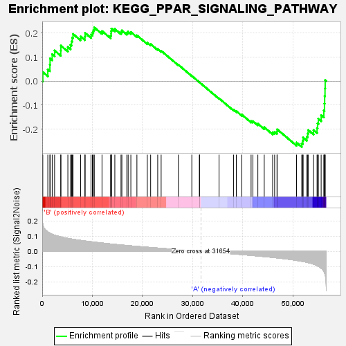

| | | Dataset | my.my.cls#B_versus_A.my.cls#B_versus_A_repos |
| Phenotype | my.cls#B_versus_A_repos |
| Upregulated in class | A |
| GeneSet | KEGG_PPAR_SIGNALING_PATHWAY |
| Enrichment Score (ES) | -0.27424595 |
| Normalized Enrichment Score (NES) | -0.9399204 |
| Nominal p-value | 0.5184466 |
| FDR q-value | 0.5904825 |
| FWER p-Value | 1.0 |
Table: GSEA Results Summary

Fig 1: Enrichment plot: KEGG_PPAR_SIGNALING_PATHWAY
Profile of the Running ES Score & Positions of GeneSet Members on the Rank Ordered List
| SYMBOL | TITLE | RANK IN GENE LIST | RANK METRIC SCORE | RUNNING ES | CORE ENRICHMENT | | 1 | ACSL4 | na | 115 | 0.177 | 0.0379 | No |
| 2 | PLTP | na | 1117 | 0.127 | 0.0489 | No |
| 3 | CYP7A1 | na | 1534 | 0.119 | 0.0682 | No |
| 4 | CYP27A1 | na | 1567 | 0.118 | 0.0943 | No |
| 5 | APOA5 | na | 1991 | 0.112 | 0.1119 | No |
| 6 | ILK | na | 2467 | 0.106 | 0.1274 | No |
| 7 | APOA2 | na | 3698 | 0.095 | 0.1269 | No |
| 8 | RXRG | na | 3723 | 0.094 | 0.1477 | No |
| 9 | AQP7 | na | 5114 | 0.085 | 0.1423 | No |
| 10 | FADS2 | na | 5646 | 0.082 | 0.1513 | No |
| 11 | RXRB | na | 5856 | 0.081 | 0.1657 | No |
| 12 | UCP1 | na | 5984 | 0.080 | 0.1815 | No |
| 13 | SCD | na | 6143 | 0.079 | 0.1965 | No |
| 14 | FABP3 | na | 7651 | 0.072 | 0.1860 | No |
| 15 | SCD5 | na | 8512 | 0.068 | 0.1861 | No |
| 16 | APOA1 | na | 8555 | 0.068 | 0.2006 | No |
| 17 | SLC27A1 | na | 9732 | 0.063 | 0.1939 | No |
| 18 | OLR1 | na | 10002 | 0.062 | 0.2031 | No |
| 19 | GK | na | 10196 | 0.061 | 0.2134 | No |
| 20 | SLC27A6 | na | 10379 | 0.060 | 0.2237 | No |
| 21 | ANGPTL4 | na | 11919 | 0.055 | 0.2088 | No |
| 22 | APOC3 | na | 13632 | 0.048 | 0.1895 | No |
| 23 | CD36 | na | 13742 | 0.048 | 0.1983 | No |
| 24 | PLIN1 | na | 13745 | 0.048 | 0.2091 | No |
| 25 | LPL | na | 13805 | 0.048 | 0.2188 | No |
| 26 | ADIPOQ | na | 14476 | 0.046 | 0.2172 | No |
| 27 | MMP1 | na | 15709 | 0.042 | 0.2048 | No |
| 28 | GK2 | na | 15877 | 0.041 | 0.2112 | No |
| 29 | SORBS1 | na | 16870 | 0.038 | 0.2023 | No |
| 30 | ACSL3 | na | 17131 | 0.037 | 0.2061 | No |
| 31 | FABP4 | na | 17669 | 0.036 | 0.2047 | No |
| 32 | CPT1C | na | 18877 | 0.033 | 0.1907 | No |
| 33 | ACSL5 | na | 20950 | 0.027 | 0.1601 | No |
| 34 | ACADL | na | 21613 | 0.025 | 0.1541 | No |
| 35 | CPT1B | na | 23025 | 0.021 | 0.1340 | No |
| 36 | UBC | na | 23707 | 0.020 | 0.1264 | No |
| 37 | ACSL6 | na | 27139 | 0.011 | 0.0682 | No |
| 38 | SLC27A5 | na | 29824 | 0.004 | 0.0217 | No |
| 39 | ACAA1 | na | 31345 | 0.001 | -0.0050 | No |
| 40 | ACOX2 | na | 31351 | 0.001 | -0.0049 | No |
| 41 | FABP6 | na | 35251 | -0.009 | -0.0718 | No |
| 42 | ACSL1 | na | 38129 | -0.016 | -0.1190 | No |
| 43 | NR1H3 | na | 38696 | -0.018 | -0.1250 | No |
| 44 | DBI | na | 39784 | -0.021 | -0.1396 | No |
| 45 | RXRA | na | 41635 | -0.026 | -0.1665 | No |
| 46 | FABP7 | na | 41998 | -0.027 | -0.1668 | No |
| 47 | PDPK1 | na | 42986 | -0.030 | -0.1775 | No |
| 48 | PCK2 | na | 44257 | -0.034 | -0.1924 | No |
| 49 | CPT1A | na | 45933 | -0.039 | -0.2131 | No |
| 50 | ME1 | na | 46331 | -0.041 | -0.2110 | No |
| 51 | SLC27A2 | na | 46813 | -0.042 | -0.2100 | No |
| 52 | CYP8B1 | na | 46821 | -0.042 | -0.2006 | No |
| 53 | SLC27A4 | na | 50689 | -0.059 | -0.2558 | No |
| 54 | HMGCS2 | na | 51736 | -0.065 | -0.2597 | Yes |
| 55 | FABP2 | na | 51931 | -0.066 | -0.2483 | Yes |
| 56 | PPARA | na | 52014 | -0.066 | -0.2349 | Yes |
| 57 | ACOX3 | na | 52764 | -0.071 | -0.2320 | Yes |
| 58 | FABP5 | na | 52922 | -0.073 | -0.2185 | Yes |
| 59 | CYP4A22 | na | 53016 | -0.073 | -0.2036 | Yes |
| 60 | PPARD | na | 54087 | -0.083 | -0.2039 | Yes |
| 61 | FABP1 | na | 54786 | -0.093 | -0.1954 | Yes |
| 62 | EHHADH | na | 54885 | -0.094 | -0.1758 | Yes |
| 63 | PPARG | na | 55047 | -0.098 | -0.1567 | Yes |
| 64 | PCK1 | na | 55603 | -0.110 | -0.1419 | Yes |
| 65 | ACADM | na | 56133 | -0.129 | -0.1221 | Yes |
| 66 | SCP2 | na | 56267 | -0.138 | -0.0934 | Yes |
| 67 | CYP4A11 | na | 56300 | -0.141 | -0.0622 | Yes |
| 68 | CPT2 | na | 56372 | -0.149 | -0.0300 | Yes |
| 69 | ACOX1 | na | 56406 | -0.153 | 0.0038 | Yes |
Table: GSEA details [plain text format]
Fig 2: KEGG_PPAR_SIGNALING_PATHWAY
Blue-Pink O' Gram in the Space of the Analyzed GeneSet
Fig 3: KEGG_PPAR_SIGNALING_PATHWAY: Random ES distribution
Gene set null distribution of ES for KEGG_PPAR_SIGNALING_PATHWAY